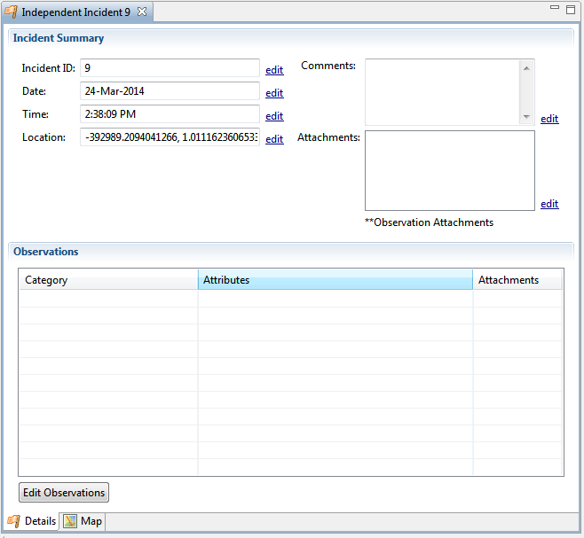
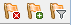

The Independent Incidents add--on allows you to enter observation data whcih is not related to any paticular Patrol, Survey, or other formal data collection practice. This means it can be used for one-off, or oppourtunistic data. For example, an office employee saw an important animal species on the way to work, simply enter the rough date and time in the independent observation and you can add that observation to all your official patrol data etc.
This plug-in is very useful to combine with the Entity Tracking Plug-ins as you can record many events that occur to your entities without the need for creating a patrol structure. For example: using Rhino Entities, one could record an animal translocation into your area as an independent observations.
It is easy to query data both including and excluding the independent observations so you can continue to analyze you formal data collection efficiency etc without worry about diluting it with other less scientific data collection, but you may also query data from all sources in the cases where you would like to see every piece of information collected regardless of source.
Incident - A place and time where something occured or was observed. Exactly the same database concept as a waypoint in a Patrol, there is simply one incident independent of any other patrols etc.
Observation - something that was observed at a particular incident or waypoint. You may have many observations at the same place and time which can be entered into the same incident to treat them as one incident. You may also create two incidents at the exact same time and place if you wish to treat observations as seperate incidents.
To create a new incident
You should then see the incident details page on your screen:

You can edit the properties of the incident on this screen using the "edit" button beside the property you wish to edit.
To add or edit observations press the "Edit Obesrvation" Button and select the category of observation to add. If you already have observations, this button will list them all and you can press the "Edit" or "Delete" button next to the observation you wish to modify.
The map tab at the bottom of the page allows you to view where this incident is on the map. Use the same map tools and buttons as the other mapping windows in the application.
To export Incidents:
To import incidenents:
Select "Field Data->Independent Incidents->View Incidents" to see a list of existing incidents.
Use the "delete" "Add" and "Filter" icons at the top of the list to remove, add or change the list filter(the default filter shows only data from the last 30 days).
